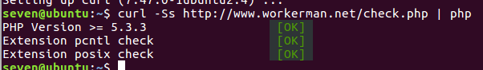
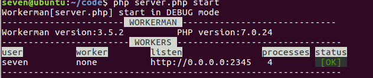

workman学习系列1
在之前的学习当中，感觉php就是做各种网站，其实php可以利用各种第三方来完成各种各样的小功能，比如，现在我接下来要学习的workman
Workerman不是重复造轮子，它不是一个MVC框架，而是一个更底层更通用的socket服务框架，你可以用它开发tcp代理、梯子代理、做游戏服务器、邮件服务器、ftp服务器、甚至开发一个php版本的Redis、php版本的数据库、php版本的nginx、php版本的php-fpm等等。Workerman可以说是PHP领域的一次创新，让开发者彻底摆脱了PHP只能做WEB的束缚。
安装下载wokerman
环境要求
workerman对php环境的要求是：
1、PHP CLI>=5.4，可以运行命令 php -v 查看版本
2、Linux系统要求php安装了posix和pcntl扩展
Linux系统可以在命令中运行 curl -Ss http://www.workerman.net/check.php | php 检测本地环境是否满足workerman。
环境配置成功

下载源码测试连接
具体教程请看workerman
测试成功
